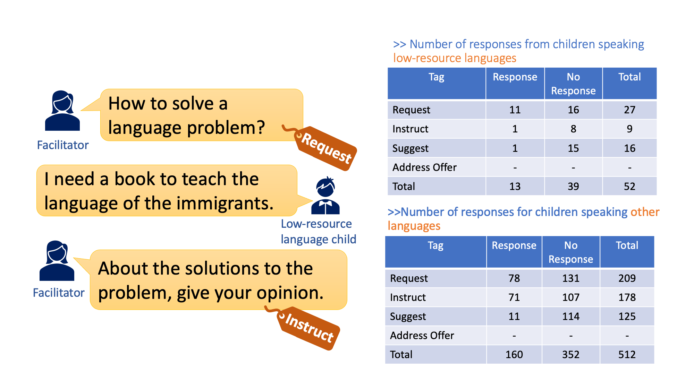
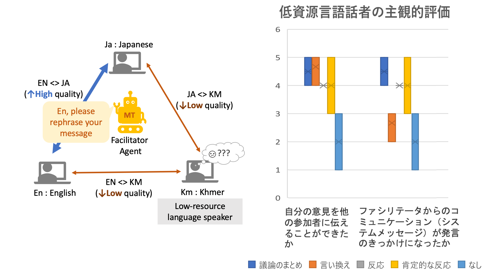
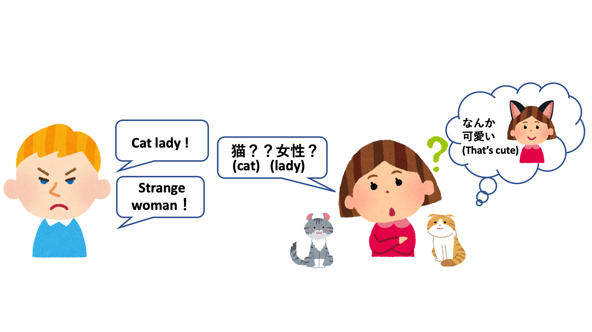

Collaboration Technology
We have been working toward tools and services to support intercultural collaboration, including machine translation embedded tools, cultural difference detection, facilitation agent, etc.

Facilitation Analysis of Children's Cross-cultural Collaboration
One of the 17 goals of the SDGs is "to provide quality education to everyone", in which it is argued that an attitude of respect for cultural diversity is important. Cross-cultural collaboration using machine translation is being carried out to foster this attitude among children. Children discuss in a multinational group with the aim of proposing solutions to international problems. However, because the accuracy of machine translation varies from language to language, children who use languages with low translation accuracy speak less than children in other languages. Therefore, we use a grounded theory approach to analyze what facilitator utterances are effective in creating an environment where children can easily speak. A field survey was conducted and collected at a summer school called "KISSY (Kyoto International Summer School for Youth)" held by NPO Pangea . From KISSY, we analyze the dialogue log data collected from the workshop. The findings obtained from this analysis will be utilized in the development of facilitator agents in the future.
[Motozawa, Mizuki, Yohei Murakami, Mondheera Pituxcoosuvarn, Toshiyuki Takasaki, and Yumiko Mori. "Conversation Analysis for Facilitation in Children’s Intercultural Collaboration." In Interaction Design and Children, pp. 62-68. 2021.]

Facilitator Agent for Multilingual Collaboration
In multilingual communication via machine translation, the accuracy of machine translation varies among languages, so speakers of languages with low translation accuracy are less able to participate in discussions and say less than speakers of other languages. This research aims to develop an agent that detects such speakers who have difficulty participating in discussions and facilitates the discussion to make it easier for them to participate. We have found that giving positive feedback to a speaker's utterance or asking the speaker to paraphrase when another speaker's utterance is too long improves the ease of expression.

Communication Support Using Cultural Difference Detection Based On Image Features
Although improvements in the quality of machine translation are eliminating language barriers, cultural differences can still cause misunderstandings.For example, even if "burdock root," which is commonly eaten by Japanese people, is translated into English, people overseas will imagine something different from what Japanese people think. In Japan, it reflects the image of the root of a plant, but overseas, it reflects the image of a plant with thorns. These are both images of burdock, but this difference arises because the culture of eating the root in Japan is different from the food culture in other countries. To detect such cultural differences, we proposed a method that uses deep learning to extract feature vectors from images and detect cultural differences based on their similarities.
[Nishimura, Ikkyu, Yohei Murakami, and Mondheera Pituxcoosuvarn. "Image-based detection criteria for cultural differences in translation." In International Conference on Collaboration Technologies and Social Computing, pp. 81-95. Springer, Cham, 2020.]

Cultural Difference Detection and Unknown Word Creation Using Vector Representation Between Different Languages
In multilingual communication, even if the translation is correct, cultural differences can create conversational discrepancies. For example, in Japan, there is a food culture of eating eggs raw, but there are also countries that do not have a culture of eating eggs raw. Our research is aimed at detecting and informing users of such cultural differences. Specifically, we detect cultural differences based on differences in the content of a large amount of text written in different languages. Distributed representation, which is a research theme, is a technique that uniquely creates a vector of words based on the position of words in a text.This vector is compared between different languages, and if the vectors are significantly different, it is determined that there is a cultural difference. In addition, there are culture-specific words (unknown words) for which no bilingual translation exists in the target language due to cultural differences.We are also researching a technology to generate a bilingual translation by combining words in the target language that are close to the vector of the unknown word.

Cultural Difference Detection of Object Impressions Based on Mask Language Model
Cultural differences in impressions of an object can cause discrepancies in communication. For example, in English, the term "Cat lady" is used to describe an unusual person who loves cats. On the other hand, in Japanese, cats do not have such a negative impression and may be understood as a cute person. In order to detect such cultural differences in impressions of an object, we propose a method to detect cultural differences based on differences in the usage of words describing that object in a corpus using a masked language model.